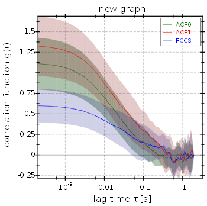

Imaging FCS Data Editor
Correlation Curves
In this editor you may look at the correlation curves (ACF/CCF) for each pixel. You can either select a pixel from the given list of pixel coordinates or from the image below this list. In addition to the selected pixels, also an average (and standard deviation) over all pixels that were not excluded (button below image) may be displayed. By excluding the ACF/CCF from a pixel you remove it from the average. This feature may be used if the sample is uniform and you want to fit to an averaged ACF/CCF. The plots have several means to interact with the user.
Parameter Image
This editor is used to display the result of fits as an image. It collects the fit results from a given set for each pixel. these fit results are displayed as a color-coded image (top left). In addition a second parameter may be selected that serves as measure for the goodnes of fit (top center plot). In the top right plot the overview image of the measurement is displayed. By clicking on one of the images, you may select the corresponding ACF/CCF to be displayed below. If you keep Ctrl pressed, while clicking, multiple pixels may be selected. The currently selected pixels may optionally be shown as overlays in the three top-row plots. In addition to the ACFs/CCFs, also the fits is displayed. The fitparameters are shown in the table on the right of the correlation function plot.
On the right-hand side you may select different options that change the appearance of the plots (color scales, ranges, ...).
The parameters to display are selected above the plots. First you will have to select a fit parameter set. If you use the FCS Fit plugin for fitting, a new set will be created for every differing combination of evaluation item (if you have two, you can distinguish these), fit algorithm and fit function. Then as a second step you may selectthe parameters to display. The parameters can be transformed with some basic mathematical transformations (none reciprocal 1/x, square root, logarithm) before they are displayed. The display settings (transformation, color coding, ...) are stored for every fit parameter and result set separately in the project, so you can switch to and back between different parameters, without loosing the settings.
The plots have several means to interact with the user.
There are several options to mask and select pixels: On the one hand you may "draw" a selection or mask onto any image, on the other hand, several automatic tools are grouped in the Mask and Selection menus. In addition the current selection may be saved under a given name in the RDR, using the "stored selections" controls on the rhs column. A click on  will ask for a new name for the selection and save it. Afterwards the selection can be restored, by selecting it from the combobox next to this button. The current selection may be deleted from the list of stored selections by clicking
will ask for a new name for the selection and save it. Afterwards the selection can be restored, by selecting it from the combobox next to this button. The current selection may be deleted from the list of stored selections by clicking  ./p>
./p>
Further display options:
- Correlation plot styles/Selection Display mode: here you can select what the correlation display should contain if several pixels are selected: Either the curves of all selected pixels are shown (which is possibly slow if you selected many pixels, or an average over these correlation curves is displayed. In that case the parameters table also contains the statistics of all selected fit results. Note that in DualView mode (see above) one average/statistics for every image channel will be displayed!
- deprecated:
general options/DualView mode: If your microscope is equipped with DualView (or OptoSplit) optics, the displayed image will be split in the center into two parts (left/right, top/bottom) which correspond to two detection channels. This option allows to use this information. If the DualView mode is set properly, the e.g. when selecting pixels, they will be selected in both channels. Also the correlation curve display below will display two averaged curves if several pixels are detected to allow for a comparison of the two image channels.
Histograms
This editor also calculates histograms of all currently displayed parameter values. You find them in the Histograms tab (behind the parameter image tab).
Like the parameter image plot itself, the histograms are calculated over the transformed parameters. In addition a boxplot shows the statistical parameters of the histogram.
On the rhs of the histogram plot, you can select some properties of the displayed histogram. If you checked the box mind exvluded runs, the pixels that were excluded (see above) are not used to calculate the histograms. The plots have several means to interact with the user.
If you selected more than one pixel in the parameter image, a second histogram shows the statistics of the selected pixels only.
Saving Data and Reports
You can save the parameter and goodnes-of-fit images as data files for further processing, or as a report:
 Data | Save data: Saves the parameter image and goodnes of fit image as a separate file. The selected parameter transformations are omitted. You can select different file formats:
Data | Save data: Saves the parameter image and goodnes of fit image as a separate file. The selected parameter transformations are omitted. You can select different file formats:
- Comma-Separated value: saves the data as text file which contains a matrix of numbers, separated by commas (,) and with a dot (.) as decimal separator.
- Semicolon-Separated value [German Excel]: saves the data as text file which contains a matrix of numbers, separated by semicolons (;) and with a comma (,) as decimal separator.
- SYLK: saves the data as a SYLK file which can be imported by many spread sheet programs
- float-TIFF: saves the data as a TIFF image with 32-bit floating point values in each pixel.
- 16-bit-TIFF: saves the data as a TIFF image with 16-bit unsigned integer values in each pixel.
- color-coded PNG image: saves the data as PNG image with the color coding used in the dialog (note: this uses the same transformation as the dialog).
The two images are saved into separae files. They end with the suffix .param.ext for the parameter image or .gof.ext for the goodnes of fit image.
 Data | Copy Images to Matlab: copies the currently displayed images to the clipboard as a Matlab script. When the script is executed it defines four variables, one for each type of data (parameter image, goodnes of fit image, mask image, overview image).
Data | Copy Images to Matlab: copies the currently displayed images to the clipboard as a Matlab script. When the script is executed it defines four variables, one for each type of data (parameter image, goodnes of fit image, mask image, overview image). Data | Copy Images as Columns: copies the currently displayed images to the clipboard in a format so they can be imported into spreadsheet programs. This function serializes the data, i.e. each image is copies as one column. Before the data is actually copied, you will be rpesented with a dialog that allows to select the columns that should be exported. It is also possible to add the pixel ID (integer number starting at (0,0) -> 0 and numbering all pixels in row-major order) and pixel coordinates.
Data | Copy Images as Columns: copies the currently displayed images to the clipboard in a format so they can be imported into spreadsheet programs. This function serializes the data, i.e. each image is copies as one column. Before the data is actually copied, you will be rpesented with a dialog that allows to select the columns that should be exported. It is also possible to add the pixel ID (integer number starting at (0,0) -> 0 and numbering all pixels in row-major order) and pixel coordinates.- Data | Insert Correlation Curves as new RDR into Project: This function takes the currently selected pixels and copies the according ACFs into a new fcs raw data record. This new RDR is then inserted into the project. Then you can perform additional FCS evaluations on these. Note that all information about the position of the pixels gets lost! Each pixel's ACF is inserted as a run into the fcs record.
- imFCS Tools | copy all CFs from group to table: This function will average the correlation functions in the current selection and copy it into a new table raw data record. Then it does the same for all files in the same rdr group as the current file. Finally the table will contain all averaged ACFs for the given selection from all files in the group and a plot contaiing all those. You can use this function to create FCCS overview plots like this one:

FCCS plot
 Save report: Save the contenst of the current window as a PDF or PostScript file.
Save report: Save the contenst of the current window as a PDF or PostScript file. Print report: Print the contents of the curret window.
Print report: Print the contents of the curret window.
Tab "Correlation Curves"
In this tab you will see all correlation curves loaded into the current raw data record. On the rhs. you may choose how they are presented to you and see a list of all available runs. There are also buttons to exclude selected runs from the evaluation. These options are available:
- display average: select a display style for the average over all runs.
- display runs: choose how to display the different runs in the file
- no pixels: displays only the average
- all pixels: displays all runs in different colors
- all pixels (highlighted): displays all runs in gray, and the selected runs in red
- selected pixels: displays only the currently selected run
- select pixels to display: a list of all pixels in the image (row-major ordered). Select a pixel to display its intensity trace
- exclude/include pixel: excludes/includes the currently selected pixel ("select runs to display" list or overview image) from the evaluation. Note that the runs won't be deleted physically from the file, but will rather be marked as "do not use" in the project only. So the input data files are NEVER altered.
- overview: overview image (time-averaged image stack) of the measurement. Klicking a pixel selects the pixel. Excluded and selected pixels are displayed in blue/red.
- Graph/Plot: For information on how to interact with the plot, please see the according online-help page.
- Also see the page "$$qf_ui_rdr_helpfiletitle$$" for futher information about UI elements common to all raw data records.
Tab "Countrate/Intensity Trace"
In this tab you can look at the intensity time traces of each pixel.
On the rhs you may choose how they are presented to you and see a list of all available pixels and a time-averaged overview intensity image in which pixels may be selected by clicking. There are also buttons to exclude selected pixels from the evaluation. These options are available:
- data display mode:
- time-binned video: display the binned timetrace as calculated as "video" in the imagingFCS correlator tool after background and bleach correction
- uncorrected time-binned video: display the binned timetrace as calculated as "video" in the imagingFCS correlator tool
- select pixels to display: a list of all pixels in the image (row-major ordered). Select a pixel to display its intensity trace
- exclude/include pixel: excludes/includes the currently selected pixel ("select runs to display" list or overview image) from the evaluation. Note that the runs won't be deleted physically from the file, but will rather be marked as "do not use" in the project only. So the input data files are NEVER altered.
- overview: overview image (time-averaged image stack) of the measurement. Klicking a pixel selects the pixel. Excluded and selected pixels are displayed in blue/red.
- Graph/Plot: For information on how to interact with the plot, please see the according online-help page.
- Also see the page "$$qf_ui_rdr_helpfiletitle$$" for futher information about UI elements common to all raw data records.
Tab "Images, Videos, Timetrace"
- This tab displays the overview images and videos stored together with the data. In the "image/video" combobox you can select the image or video, which is then displayed below. If a video is selected, control elements are accessible below. For each currently displayed image the according intensity histogram is available in the "Histogram" tab.
- Also the countrate statistics (averaged over the whole image frame) is displayed (rhs).